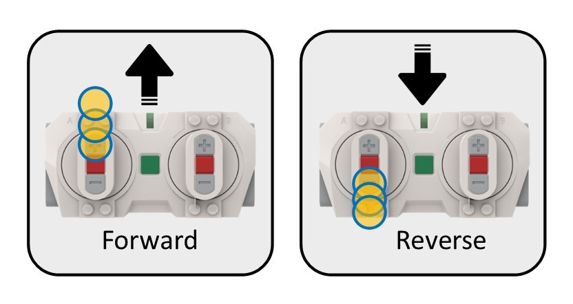
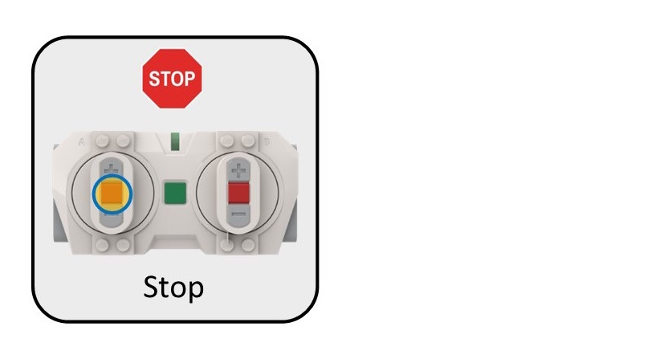

Instructor
| Light | What it looks like | What it means |
|---|---|---|
| Blue — steady | Program started, connecting… | |
| 3 white flashes, pause | Looking for remote — wait | |
| Green — flashing | Ready — press buttons to start timer | |
| Green — steady | Timer running, vehicle working | |
| Orange — steady | Time’s up! Vehicle has stopped | |
| Red — flashing | Error — see troubleshooting below |
To reset and run again: press left centre + centre + right centre buttons on the remote.

